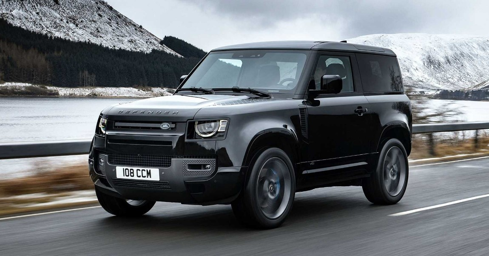

Rivaldo Personal Information
Personal Favorite Topic: Wilderness & Travel Adventures

I have a deep passion for survival skills, bushcraft, and adapting to various natural conditions. Engaging in these activities not only provides me with a profound sense of calm but also offers a meaningful escape from the hectic pace of daily life. Whether it’s mastering wilderness techniques, navigating the challenges of the natural world, or simply immersing myself in the tranquility of the outdoors, these pursuits help me reconnect with myself and find peace away from the constant demands and noise of modern living.
I have a dream of embarking on adventurous journeys with a Range Rover, using it to explore the great outdoors and camp under the stars in the comfort of my vehicle. This ambition is coupled with my desire to travel the world, with Japan and Finland topping my list of must-visit destinations. The thought of traversing diverse landscapes in a robust Range Rover, and then experiencing the rich cultures and stunning natural beauty of these countries, excites me immensely. Combining my passion for exploration and global travel with the practicality and luxury of a Range Rover promises an unforgettable adventure that spans both thrilling off-road escapades and immersive international experiences.